故事从冬日开始。
一副声音，等待被听见。
MUSICAL THEATRE ACTOR
杨嘉昊
YANG JIAHAO
静处蓄势
登场有声
ACTOR / 2004
光落下之前
他先成为自己。
ROLE / HIGH PRIEST
一步入境
同一张脸，抵达另一重灵魂。
0001
01 / PROFILE
演员档案
安静不是
没有声音
它只是力量抵达舞台之前，
短暂而准确的停顿。
- 出生日期
- 2004.12.19
- 院校
- 沈阳音乐学院
- 专业
- 音乐剧系 · 2022级
- 身份
- 音乐剧演员
02 / BECOMING
BECOMING AN ACTOR
时间不是履历
是成为的过程
进入沈阳音乐学院音乐剧系，
让声音、身体与人物相遇。
从课堂走进沉浸式剧场，
每一次登场都成为新的坐标。
02 / BETWEEN ROLES
从本人，到角色
两面之间
YANG JIAHAO
THE HIGH PRIEST
拖动中线，进入角色
03 / THE HIGH PRIEST
沉浸式剧场《幡灵迷境》
大祭司
角色不是戴上去的面具。
是从自己身上，找到另一个人。
01
04 / INSTRUMENT
THE ACTOR'S INSTRUMENT
他用什么
抵达角色
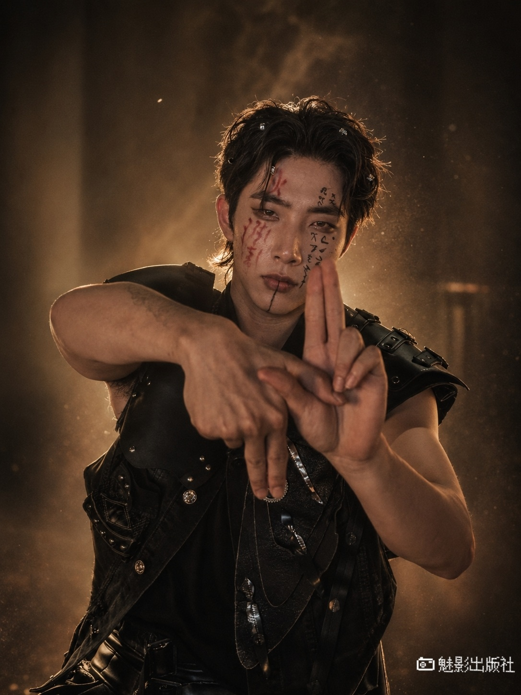
声音
从音乐剧训练出发，让呼吸、台词与旋律成为人物的内在节奏。
身体
用姿态、重心与行走方式，在观众开口判断之前建立角色。
凝视
沉浸式剧场没有安全距离，目光本身就是叙事与邀请。
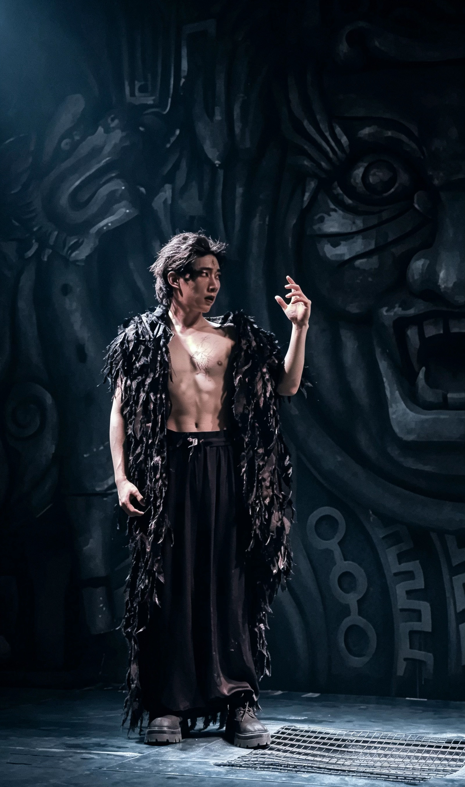
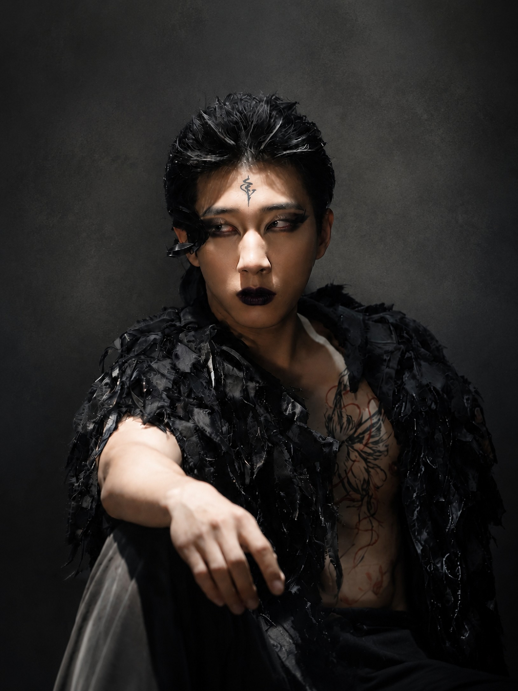
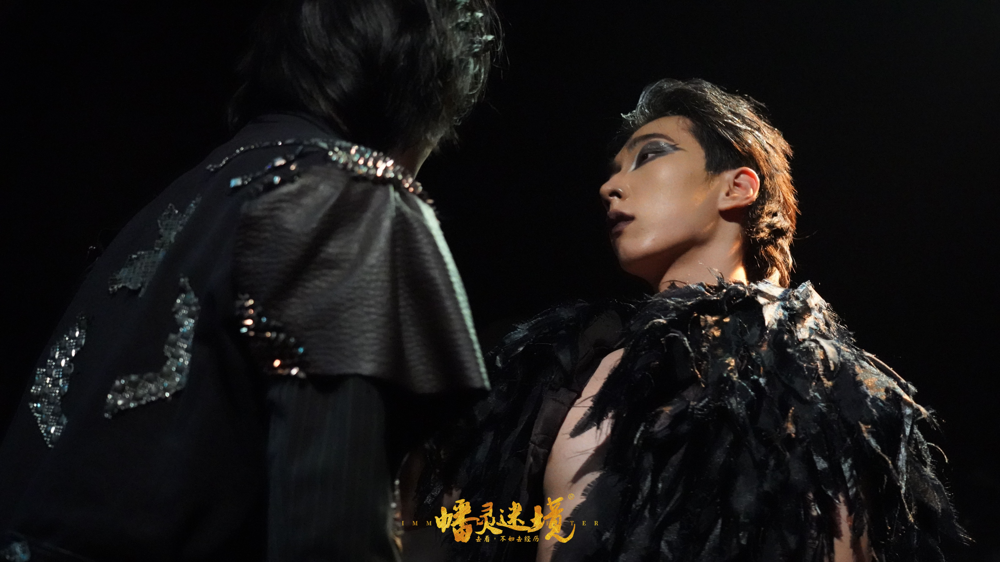
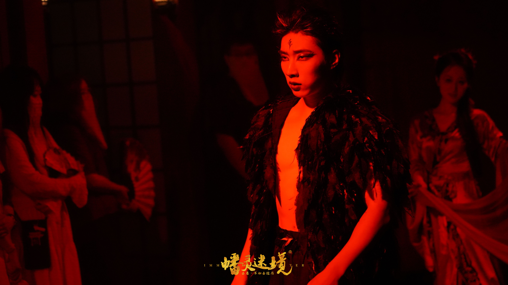
NEW CHARACTER / DEMON KING
妖王
黑羽之下，欲望与秩序彼此撕扯。
01威压
静止，也能占据整个空间。
02锋芒
以眼神制造距离，以身体逼近观众。
03失控
冷蓝褪去，角色在赤红中彻底苏醒。
AWAKENING
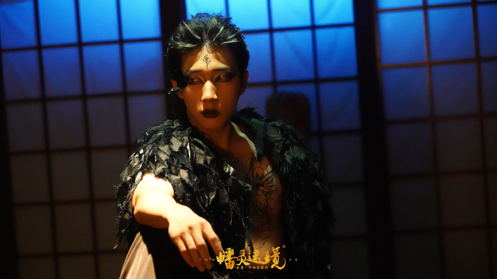
ROLE STUDY / 02不靠咆哮
不靠咆哮
建立统治
妖王的力量不只来自外形。压低的重心、延迟的动作与不轻易移开的目光，让危险感先于台词抵达。
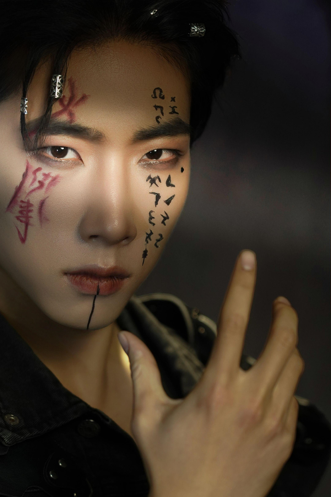
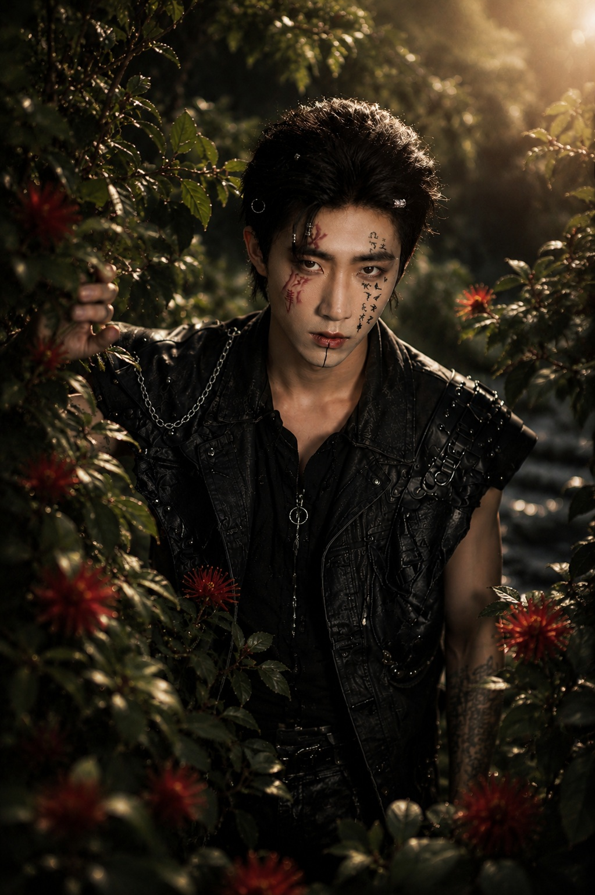
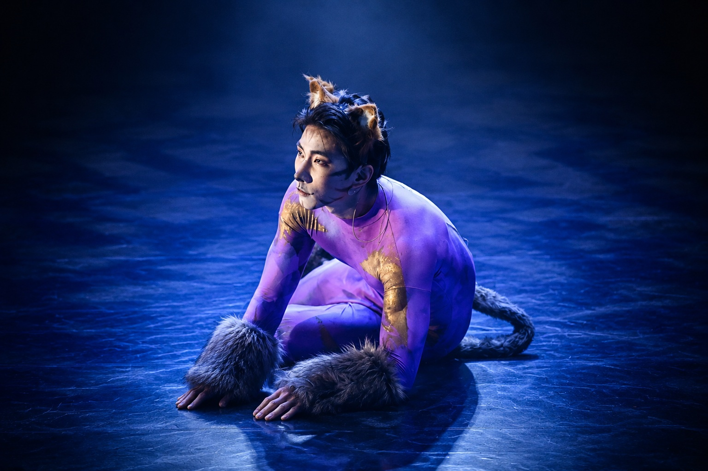
01 / RITUAL
凝视
力量，在沉默中生长。
02 / INSTINCT
入境
身体先于语言，进入人物。
03 / PLAY
越界
不被一种角色定义。
010203
VOICE INTO BODY身体成为人物CHARACTER INTO LIGHT人物抵达观众
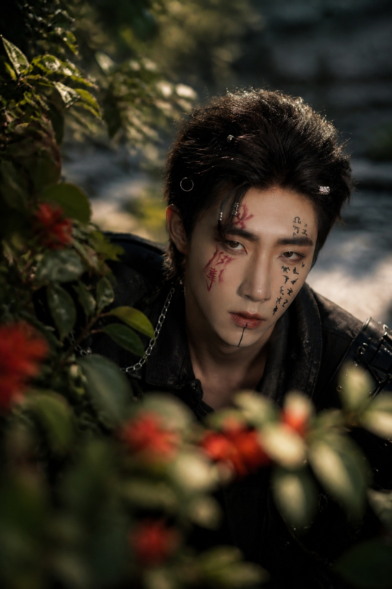
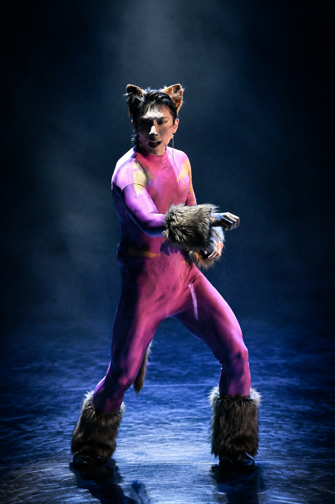
每一个角色，
都打开另一扇门。
04 / RANGE
角色跨度
不止一种
登场方式
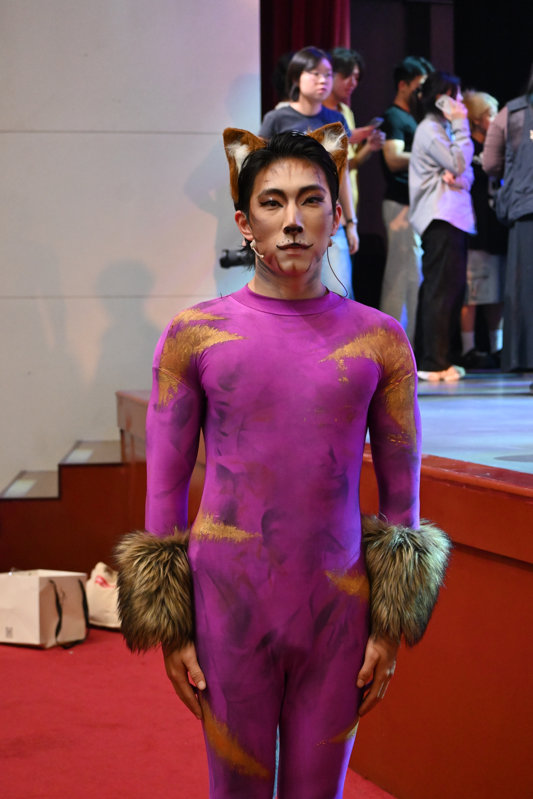
诙谐 / 肢体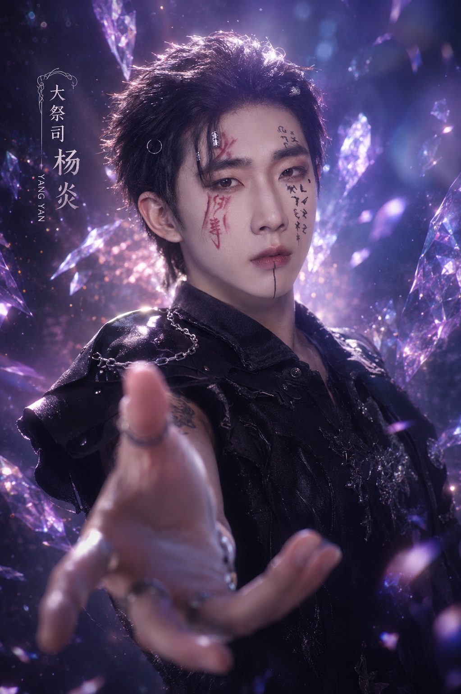
幻想 / 情绪声音进入身体
身体成为人物
人物抵达观众
05 / ARCHIVE
影像档案
每一次凝视
都有不同答案
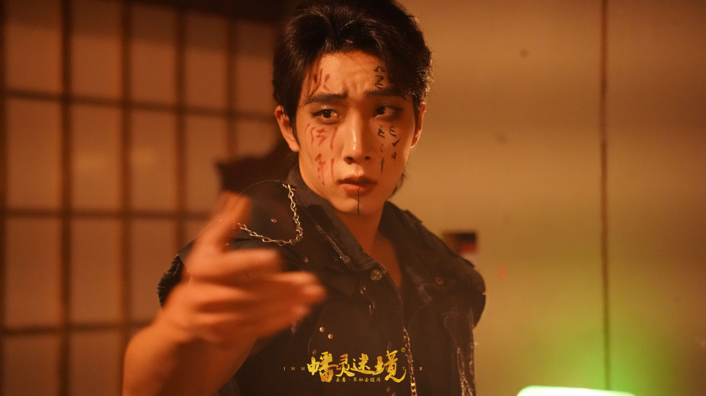
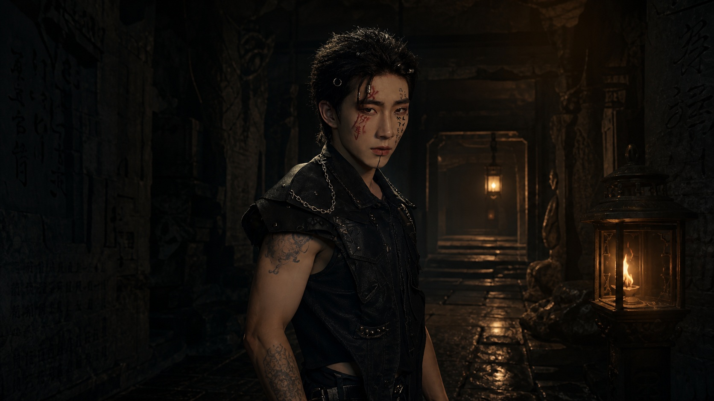
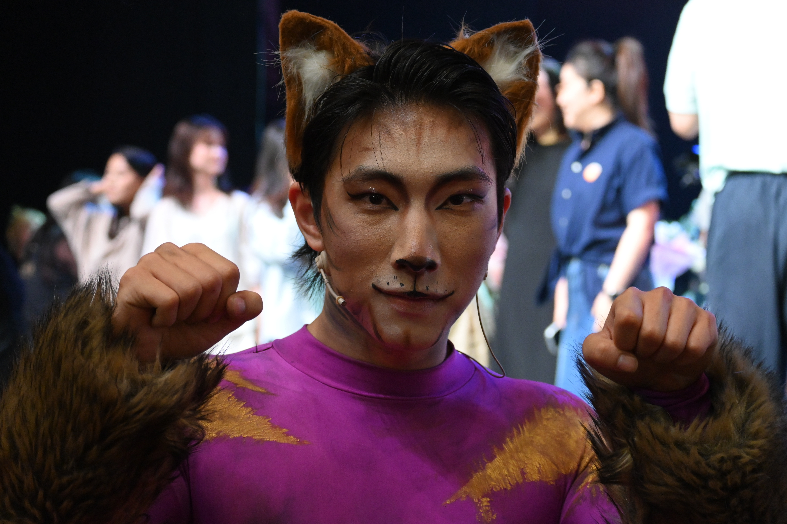
OFF STAGE / ON THE WAY舞台之外
舞台之外
仍在成为
妆面、候场、排练与短暂松弛，
共同构成角色被看见之前的漫长时间。
WINTER / 12·19
愿每一次谢幕之后
都有下一束光为你亮起
12·19
HAPPY BIRTHDAY · YANG JIAHAO尚未唱出的歌
尚未抵达的舞台